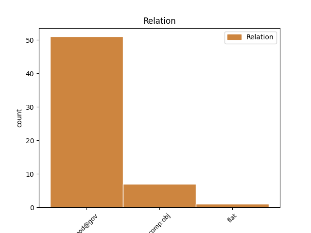
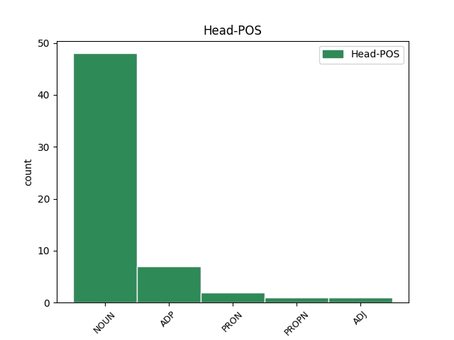
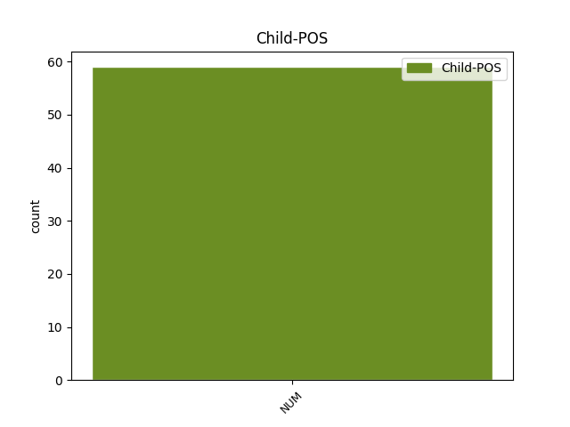

Distribution of features within this leaf



Agreement Rules sorted by frequency.
- When the dependent token is the direct object complements(comp:obj) of the head token, and the dependent token is NUM.
1 Krimi _ _ _ _ 0 _ _ _
2 romani _ _ _ _ 0 _ _ _
3 sjedinjuju _ _ _ _ 0 _ _ _
4 genijalnost _ _ _ _ 0 _ _ _
5 , _ _ _ _ 0 _ _ _
6 pravdu _ _ _ _ 0 _ _ _
7 i _ _ _ _ 0 _ _ _
8 postojeći _ _ _ _ 0 _ _ _
9 državni _ _ _ _ 0 _ _ _
10 poredak _ _ _ _ 0 _ _ _
11 u u ADP Sa Case=Acc 0 _ _ _
12 jedno jedan NUM Mlcnsa Case=Acc|Gender=Neut|Number=Sing|NumType=Card 11 comp:obj _ SpaceAfter=No
13 . _ _ _ _ 0 _ _ _
1 Znajući _ _ _ _ 0 _ _ _
2 njegove _ _ _ _ 0 _ _ _
3 korene _ _ _ _ 0 _ _ _
4 , _ _ _ _ 0 _ _ _
5 nije _ _ _ _ 0 _ _ _
6 teško _ _ _ _ 0 _ _ _
7 razumeti _ _ _ _ 0 _ _ _
8 značenje _ _ _ _ 0 _ _ _
9 opisa _ _ _ _ 0 _ _ _
10 jednog jedan NUM Mlcmsg Case=Gen|Gender=Masc|Number=Sing|NumType=Card 13 mod@gov _ _
11 od _ _ _ _ 0 _ _ _
12 ovogodišnjih _ _ _ _ 0 _ _ _
13 posetilaca posetilac NOUN Ncmpg Case=Gen|Gender=Masc|Number=Plur 0 _ _ _
14 festivala _ _ _ _ 0 _ _ _
15 iz _ _ _ _ 0 _ _ _
16 Velike _ _ _ _ 0 _ _ _
17 Britanije _ _ _ _ 0 _ _ _
18 , _ _ _ _ 0 _ _ _
19 da _ _ _ _ 0 _ _ _
20 je _ _ _ _ 0 _ _ _
21 " _ _ _ _ 0 _ _ _
22 EXIT _ _ _ _ 0 _ _ _
23 manji _ _ _ _ 0 _ _ _
24 od _ _ _ _ 0 _ _ _
25 Glastonberija _ _ _ _ 0 _ _ _
26 , _ _ _ _ 0 _ _ _
27 ali _ _ _ _ 0 _ _ _
28 sa _ _ _ _ 0 _ _ _
29 mnogo _ _ _ _ 0 _ _ _
30 više _ _ _ _ 0 _ _ _
31 energije _ _ _ _ 0 _ _ _
32 " _ _ _ _ 0 _ _ _
33 . _ _ _ _ 0 _ _ _
Disagree Examples:
1 Komšić _ _ _ _ 0 _ _ _
2 , _ _ _ _ 0 _ _ _
3 hrvatski _ _ _ _ 0 _ _ _
4 član _ _ _ _ 0 _ _ _
5 tročlanog _ _ _ _ 0 _ _ _
6 Predsedništva _ _ _ _ 0 _ _ _
7 , _ _ _ _ 0 _ _ _
8 jedan jedan NUM Mlcmsn Case=Nom|Gender=Masc|Number=Sing|NumType=Card 12 mod@gov _ _
9 je _ _ _ _ 0 _ _ _
10 od _ _ _ _ 0 _ _ _
11 najpopularnijih _ _ _ _ 0 _ _ _
12 političara političar NOUN Ncmpg Case=Gen|Gender=Masc|Number=Plur 0 _ _ _
13 u _ _ _ _ 0 _ _ _
14 Federciji _ _ _ _ 0 _ _ _
15 Bosne _ _ _ _ 0 _ _ _
16 i _ _ _ _ 0 _ _ _
17 Hercegovine _ _ _ _ 0 _ _ _
18 . _ _ _ _ 0 _ _ _
1 " _ _ _ _ 0 _ _ _
2 Jedna jedan NUM Mlcfsn Case=Nom|Gender=Fem|Number=Sing|NumType=Card 6 mod@gov _ _
3 od _ _ _ _ 0 _ _ _
4 najvažnijih _ _ _ _ 0 _ _ _
5 državnih _ _ _ _ 0 _ _ _
6 institucija institucija NOUN Ncfpg Case=Gen|Gender=Fem|Number=Plur 0 _ _ _
7 je _ _ _ _ 0 _ _ _
8 paralisana _ _ _ _ 0 _ _ _
9 . _ _ _ _ 0 _ _ _
1 Jedan jedan NUM Mlcmsn Case=Nom|Gender=Masc|Number=Sing|NumType=Card 4 mod@gov _ _
2 od _ _ _ _ 0 _ _ _
3 tih _ _ _ _ 0 _ _ _
4 napora napor NOUN Ncmpg Case=Gen|Gender=Masc|Number=Plur 0 _ _ _
5 je _ _ _ _ 0 _ _ _
6 , _ _ _ _ 0 _ _ _
7 rekao _ _ _ _ 0 _ _ _
8 je _ _ _ _ 0 _ _ _
9 ministar _ _ _ _ 0 _ _ _
10 pravde _ _ _ _ 0 _ _ _
11 Oleg _ _ _ _ 0 _ _ _
12 Efrim _ _ _ _ 0 _ _ _
13 , _ _ _ _ 0 _ _ _
14 reforma _ _ _ _ 0 _ _ _
15 pravosuđa _ _ _ _ 0 _ _ _
16 . _ _ _ _ 0 _ _ _
1 Ministarstvo _ _ _ _ 0 _ _ _
2 unutrašnjih _ _ _ _ 0 _ _ _
3 poslova _ _ _ _ 0 _ _ _
4 veruje _ _ _ _ 0 _ _ _
5 da _ _ _ _ 0 _ _ _
6 je _ _ _ _ 0 _ _ _
7 jedan jedan NUM Mlcmsn Case=Nom|Gender=Masc|Number=Sing|NumType=Card 11 mod@gov _ _
8 od _ _ _ _ 0 _ _ _
9 tih _ _ _ _ 0 _ _ _
10 pet _ _ _ _ 0 _ _ _
11 osumnjičenih osumnjičen ADJ Agpmpgy Case=Gen|Definite=Def|Degree=Pos|Gender=Masc|Number=Plur 0 _ _ _
12 , _ _ _ _ 0 _ _ _
13 Rijad _ _ _ _ 0 _ _ _
14 Rustempašić _ _ _ _ 0 _ _ _
15 , _ _ _ _ 0 _ _ _
16 bio _ _ _ _ 0 _ _ _
17 vođa _ _ _ _ 0 _ _ _
18 , _ _ _ _ 0 _ _ _
19 dok _ _ _ _ 0 _ _ _
20 se _ _ _ _ 0 _ _ _
21 drugi _ _ _ _ 0 _ _ _
22 , _ _ _ _ 0 _ _ _
23 Edis _ _ _ _ 0 _ _ _
24 Velić _ _ _ _ 0 _ _ _
25 , _ _ _ _ 0 _ _ _
26 navodno _ _ _ _ 0 _ _ _
27 borio _ _ _ _ 0 _ _ _
28 u _ _ _ _ 0 _ _ _
29 Čečeniji _ _ _ _ 0 _ _ _
30 . _ _ _ _ 0 _ _ _
1 Ministarka _ _ _ _ 0 _ _ _
2 obrazovanja _ _ _ _ 0 _ _ _
3 Ana _ _ _ _ 0 _ _ _
4 Diamantopolu _ _ _ _ 0 _ _ _
5 , _ _ _ _ 0 _ _ _
6 bivša _ _ _ _ 0 _ _ _
7 komesarka _ _ _ _ 0 _ _ _
8 EU _ _ _ _ 0 _ _ _
9 koja _ _ _ _ 0 _ _ _
10 se _ _ _ _ 0 _ _ _
11 smatra _ _ _ _ 0 _ _ _
12 jednim jedan NUM Mlcmsi Case=Ins|Gender=Masc|Number=Sing|NumType=Card 14 mod@gov _ _
13 od _ _ _ _ 0 _ _ _
14 nekolicine nekolicina NOUN Ncfsg Case=Gen|Gender=Fem|Number=Sing 0 _ _ _
15 mogućih _ _ _ _ 0 _ _ _
16 naslednika _ _ _ _ 0 _ _ _
17 trenutnog _ _ _ _ 0 _ _ _
18 premijera _ _ _ _ 0 _ _ _
19 Jorgosa _ _ _ _ 0 _ _ _
20 Papandreua _ _ _ _ 0 _ _ _
21 na _ _ _ _ 0 _ _ _
22 čelu _ _ _ _ 0 _ _ _
23 vladajuće _ _ _ _ 0 _ _ _
24 stranke _ _ _ _ 0 _ _ _
25 , _ _ _ _ 0 _ _ _
26 nazvala _ _ _ _ 0 _ _ _
27 je _ _ _ _ 0 _ _ _
28 glasanje _ _ _ _ 0 _ _ _
29 u _ _ _ _ 0 _ _ _
30 parlamentu _ _ _ _ 0 _ _ _
31 " _ _ _ _ 0 _ _ _
32 istorijskim _ _ _ _ 0 _ _ _
33 " _ _ _ _ 0 _ _ _
34 , _ _ _ _ 0 _ _ _
35 naglašavajući _ _ _ _ 0 _ _ _
36 da _ _ _ _ 0 _ _ _
37 bi _ _ _ _ 0 _ _ _
38 takav _ _ _ _ 0 _ _ _
39 konsenzus _ _ _ _ 0 _ _ _
40 mogao _ _ _ _ 0 _ _ _
41 da _ _ _ _ 0 _ _ _
42 se _ _ _ _ 0 _ _ _
43 postigne _ _ _ _ 0 _ _ _
44 i _ _ _ _ 0 _ _ _
45 na _ _ _ _ 0 _ _ _
46 drugim _ _ _ _ 0 _ _ _
47 poljima _ _ _ _ 0 _ _ _
48 . _ _ _ _ 0 _ _ _